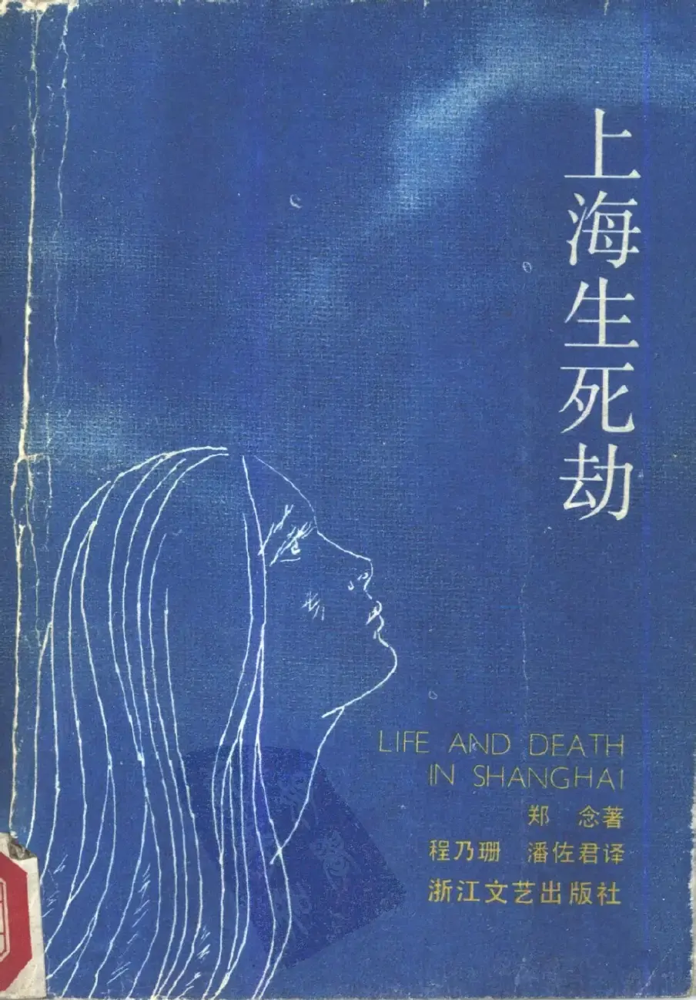
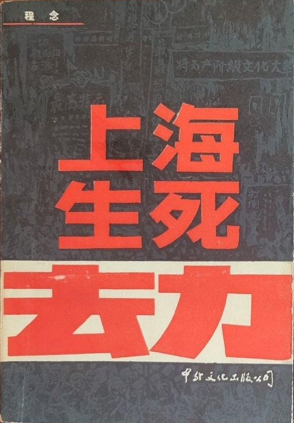

Life and Death in Shanghai
Life and Death in Shanghai is an autobiography published in November 1987 by Yao Nien-Yuan under the pen name Nien Cheng. Written in exile in the United States, it tells the story of Cheng's arrest during the first days of the Cultural Revolution, her more than six years' confinement, release, persecution, efforts to leave China, and early life in exile.
Below are details of the different versions of this book that have been published.
| Cover | Language | Publisher | Publication date | Pages | ISBN |
|---|---|---|---|---|---|
| English | Grove Press, Penguin Books | 1987 | 547 | 9780394555485 | |
| English | HarperCollins Publishers | 1988 | 512 | 9780006548614 | |
|  | Chinese | Zhejiang Literature & Art Publishing House | 1988 | 562 | 9787533901189 |
|  | Chinese | Chinese and Foreign Culture Publishing House | 1988 | 575 | 7533901185 |